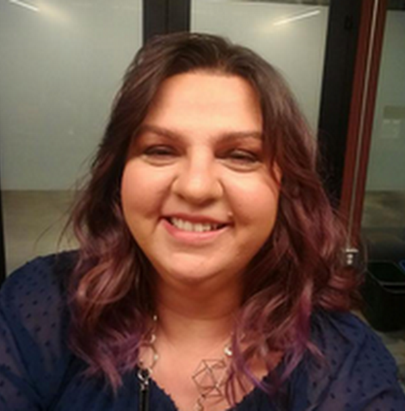

|
RSS Workshop on Social Robot NavigationEvent to be held in conjunction with Robotics: Science and Systems 2021 (RSS 2021) |
|---|
Confirmed speakers
|
Anca Dragan, UC Berkeley
Title TBD Abstract: TBD Speaker bio: Anca Dragan is an Assistant Professor in EECS at UC Berkeley, where she runs the InterACT lab. Her goal is to enable robots to work with, around, and in support of people. She works on algorithms that enable robots to a) coordinate with people in shared spaces, and b) learn what people want them to do. Anca did her PhD in the Robotics Institute at Carnegie Mellon University on legible motion planning. At Berkeley, she helped found the Berkeley AI Research Lab, is a co-PI for the Center for Human-Compatible AI, and has been honored by the Sloan fellowship, the NSF CAREER award, the Okawa award, MIT's TR35, and an IJCAI Early Career Spotlight. |
|
Jonathan P. How, Massachusetts Institute of Technology
Title TBD Abstract: TBD Speaker bio: Dr. Jonathan P. How is the Richard C. Maclaurin Professor of Aeronautics and Astronautics at the Massachusetts Institute of Technology. He received a B.A.Sc. from the University of Toronto in 1987 and his S.M. and Ph.D. in Aeronautics and Astronautics from MIT in 1990 and 1993, respectively. He then studied for two years at MIT as a postdoctoral associate for the Middeck Active Control Experiment (MACE) that flew onboard the Space Shuttle Endeavour in March 1995. Prior to joining MIT in 2000, he was an Assistant Professor in the Department of Aeronautics and Astronautics at Stanford University. He is the Editor-in-chief of the IEEE Control Systems Magazine and an Associate Editor for the AIAA Journal of Aerospace Information Systems. Professor How was the recipient of the 2002 Institute of Navigation Burka Award, a Boeing Special Invention award in 2008, the IFAC Automatica award for best applications paper in 2011, the AeroLion Technologies Outstanding Paper Award for the Journal Unmanned Systems in 2015, won the IEEE Control Systems Society Video Clip Contest in 2015, and received the AIAA Best Paper in Conference Awards in 2011, 2012, and 2013. He is a Fellow of AIAA and a senior member of IEEE. |
|
Wendy Ju, Cornell University
Title TBD Abstract: TBD Speaker bio: Wendy Ju is an Assistant Professor at the Jacobs Technion-Cornell Institute at Cornell Tech and in the Information Science field at Cornell University. Dr. Ju comes to Cornell Tech from the Center for Design Research at Stanford University, where she was Executive Director of Interaction Design Research, and from the California College of the Arts, where she was an Associate Professor of Interaction Design in the Design MFA program. Her work in the areas of human-robot interaction and automated vehicle interfaces highlights the ways that interactive devices can communicate and engage people without interrupting or intruding. Dr. Ju has innovated numerous methods for early-stage prototyping of automated systems to understand how people will respond to systems before the systems are built. She has a PhD in Mechanical Engineering from Stanford, and a Master’s in Media Arts and Sciences from MIT. Her monograph on The Design of Implicit Interactions was published in 2015. |
|
Takayuki Kanda, Kyoto University
Title TBD Abstract: TBD Speaker bio: Takayuki Kanda is a professor in Informatics at Kyoto University, Japan. He is also a Visiting Group Leader at ATR Intelligent Robotics and Communication Laboratories, Kyoto, Japan. He received his B. Eng, M. Eng, and Ph. D. degrees in computer science from Kyoto University, Kyoto, Japan, in 1998, 2000, and 2003, respectively. He is one of the starting members of Communication Robots project at ATR. He has developed a communication robot, Robovie, and applied it in daily situations, such as peer-tutor at elementary school and a museum exhibit guide. His research interests include human-robot interaction, interactive humanoid robots, and field trials. |
|
Todd Murphey, Northwestern University
Title TBD Abstract: TBD Speaker bio: Todd Murphey is a Professor of Mechanical Engineering in the McCormick School of Engineering and of Physical Therapy and Human Movement Sciences in the Feinberg School of Medicine, both at Northwestern University. He received his Ph.D. in Control and Dynamical Systems from the California Institute of Technology. His laboratory is part of the Neuroscience and Robotics Laboratory, and his research interests include robotics, control, computational methods, assistive/rehabilitative robotics, and computational neuroscience. He received the National Science Foundation CAREER award in 2006 and was a member of the 2014-2015 DARPA/IDA Defense Science Study Group. |
|
Reid Simmons, Carnegie Mellon University
Title TBD Abstract: TBD Speaker bio: Reid Simmons is a Research Professor in the Robotics Institute at Carnegie Mellon University. He recently returned to CMU from a stint as Program Director at the National Science Foundation, where he oversaw the National Robotics Initiative and Smart and Autonomous Systems programs. Dr. Simmons earned his PhD from MIT in 1988 in the field of Artificial Intelligence. Since coming to CMU in 1988, his research has focused on developing self-reliant robots that can autonomously operate over extended periods of time in unknown, unstructured environments. In addition, his research focuses on human-robot social interaction, especially non-verbal communication through affect, proxemics, motion, and gesture. Dr. Simmons is a Fulbright Scholar and a Fellow of the Association for the Advancement of Artificial Intelligence. |
|
Aleksandra Faust, Google Brain Research
Title TBD  Abstract: TBD Speaker bio: Aleksandra Faust is a Staff Research Scientist and Reinforcement Learning research team co-founder at Google Brain Research. Previously, Aleksandra founded and led Task and Motion Planning research in Robotics at Google, machine learning for self-driving car planning and controls in Waymo, and was a senior researcher in Sandia National Laboratories. She earned a Ph.D. in Computer Science at the University of New Mexico (with distinction), and a Master's in Computer Science from the University of Illinois at Urbana-Champaign. Her research interests include learning for safe and scalable reinforcement learning, learning to learn, motion planning, decision-making, and robot behavior. Aleksandra won IEEE RAS Early Career Award for Industry, the Tom L. Popejoy Award for the best doctoral dissertation at the University of New Mexico in the period of 2011-2014, and was named Distinguished Alumna by the University of New Mexico School of Engineering. Her work has been featured in the New York Times, PC Magazine, ZdNet, VentureBeat, and was awarded Best Paper in Service Robotics at ICRA 2018, Best Paper in Reinforcement Learning for Real Life (RL4RL) at ICML 2019, and Best Paper of IEEE Computer Architecture Letters in 2020. |